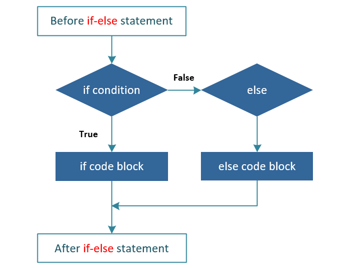

Q1 (a): Distinguish between *(p)[5] and *p[5].
Answer:
*(p)[5] refers to the value of the 5th element
of the array pointed to by p, whereas
*p[5] refers to the value pointed to by the 5th
element in an array of pointers.
Example:
int a[10]; int *p = a; → *(p)[5] is
a[5]
Q1 (b): Explain the use of scanf() and printf() functions in C.
Answer:
The scanf() function is used to read formatted input from
the standard input device, while the printf() function is
used to display formatted output on the standard output device.
Example:
scanf("%d", &x); printf("%d", x);
Q1 (c): What are the main data types present in C?
Answer:
The main data types in C are int (integer values),
char (characters), float (single precision
decimal values), double (double precision values), and
void (represents no value).
Q1 (d): How many times will the loop be executed?
int x = 2345;
while(x > 0) {
x = x / 10;
}
Answer:
The loop will execute 4 times because the value of x will
change from 2345 to 234, then to 23, to 2, and finally to 0, at which
point the loop terminates.
Page 1
1.(e) What are the three main types of control statements in C?
Answer:
The three main types of control statements in C are:
- Selection statements –
if, if-else, switch
- Iteration statements –
for, while, do-while
- Jump statements –
break, continue, goto, return
1.(i) What will be the output of the following C code?
#include <stdio.h>
int main()
{
int a = 10;
printf("%d,%d,%d,%d\n", a++, ++a, a--, --a);
printf("%d", a);
return 0;
}
Answer:
The output of the program is:
10,12,12,11 and
11
Explanation:
a++ → prints 10, then a becomes 11++a → increments first, so a becomes 12 and prints 12a-- → prints 12, then a becomes 11--a → decrements first, so a becomes 10 and prints 11 (after sequence evaluation)
Finally,
a remains
11.
Page 2
1.(g) Write the syntax of if-else statement in C and draw the corresponding flow diagram.
Answer:
The
if-else statement is used to execute different blocks of code based on a condition.
Syntax:
if(condition)
{
statements;
}
else
{
statements;
}
Flow Diagram:

Page 3
(h) Explain do-while loop in C with a suitable example.
Answer:
A
do-while loop is an exit-controlled loop in which the loop body is executed at least once,
even if the condition is false.
Syntax:
do
{
statements;
}
while(condition);
Example:
int i = 1;
do
{
printf("%d ", i);
i++;
}
while(i <= 5);
2. (a) What are break and continue statements in C? Explain with suitable examples.
Answer:
break: The
break statement is used to terminate the loop or switch statement immediately.
Example:
for(int i = 1; i <= 5; i++)
{
if(i == 3)
break;
printf("%d ", i);
}
continue: The
continue statement skips the remaining statements of the current iteration
and moves to the next iteration.
Example:
for(int i = 1; i <= 5; i++)
{
if(i == 3)
continue;
printf("%d ", i);
}
Page 4
2.(b) Write the syntax of do-while statement in C. Write a C program to find factorial of a positive integer using do-while statement.
Answer:
A
do-while statement is an exit-controlled loop in which the body of the loop
executes at least once before the condition is tested.
Syntax:
do
{
statements;
}
while(condition);
Program to find factorial of a positive integer:
#include <stdio.h>
int main()
{
int n, fact = 1;
printf("Enter a positive integer: ");
scanf("%d", &n);
do
{
fact = fact * n;
n--;
}
while(n > 0);
printf("Factorial = %d", fact);
return 0;
}
Explanation:
The loop multiplies the value of
n repeatedly with
fact and decrements
n by 1 in each iteration until
n becomes zero.
Page 5
2.(c) Illustrate function prototype in C with a suitable example.
Define a function in C to compute GCD of two positive integers.
Answer:
A function prototype in C specifies the function name, return type,
and parameters before the function is used. It helps the compiler
perform type checking.
Example of function prototype:
Program to compute GCD of two positive integers:
#include <stdio.h>
int gcd(int a, int b);
int main()
{
int x, y;
printf("Enter two positive integers: ");
scanf("%d %d", &x, &y);
printf("GCD = %d", gcd(x, y));
return 0;
}
int gcd(int a, int b)
{
while(b != 0)
{
int temp = b;
b = a % b;
a = temp;
}
return a;
}
Explanation:
The function uses the Euclidean algorithm to repeatedly calculate
the remainder until it becomes zero. The last non-zero value is the GCD.
Page 6
2.(d) Write an algorithm and draw the corresponding flowchart to find all roots of a quadratic equation.
Answer:
A quadratic equation is of the form
ax² + bx + c = 0,
where
a ≠ 0.
Algorithm:
- Start
- Read values of
a, b, and c
- Calculate discriminant
D = b² - 4ac
- If
D > 0, roots are real and distinct
- If
D = 0, roots are real and equal
- If
D < 0, roots are complex
- Display the roots
- Stop
Flowchart:
Page 7
3. (c) (i) Write the differences between Hardware and Software.
Answer:
| Hardware |
Software |
| Hardware refers to the physical components of a computer. |
Software refers to the set of programs and instructions. |
| It can be seen and touched. |
It cannot be seen or touched physically. |
| Examples: Keyboard, Monitor, CPU. |
Examples: Operating System, Compiler, Application programs. |
| Hardware cannot function without software. |
Software requires hardware to execute. |
3. (c) (iii) Write a C program to check whether a given number is prime or not.
Answer:
Program:
#include <stdio.h>
#include <math.h>
int main()
{
int num, i, isPrime = 1;
printf("Enter a positive integer: ");
scanf("%d", &num);
if (num <= 1) {
isPrime = 0; // numbers less than or equal to 1 are not prime
} else {
for (i = 2; i <= sqrt(num); i++) {
if (num % i == 0) {
isPrime = 0; // found a divisor, not prime
break;
}
}
}
if (isPrime) {
printf("%d is a prime number.\n", num);
} else {
printf("%d is not a prime number.\n", num);
}
return 0;
}
Explanation:
A number is prime if it is divisible only by 1 and itself.
The program checks divisibility from 2 to the square root of the number.
If any divisor is found, it marks the number as not prime.
Page 8
3. (c) (ii) Write a C program to find the mean and variance of 10 given real numbers.
Answer:
Program:
#include <stdio.h>
int main()
{
float a[10], sum = 0, mean, variance = 0;
int i;
printf("Enter 10 real numbers:\n");
for(i = 0; i < 10; i++)
{
scanf("%f", &a[i]);
sum += a[i];
}
mean = sum / 10;
for(i = 0; i < 10; i++)
{
variance += (a[i] - mean) * (a[i] - mean);
}
variance = variance / 10;
printf("Mean = %f\n", mean);
printf("Variance = %f", variance);
return 0;
}
Explanation:
First, the program calculates the sum of the 10 numbers and computes the mean.
Then, it calculates the variance by finding the average of the squared differences
between each number and the mean.
Page 9
3. (b) (i) Write a program in C to print the following outputs using for loops:
1
2 2
3 3 3
4 4 4 4
5 5 5 5 5
Answer:
Program:
#include <stdio.h>
int main() {
int i, j;
for(i = 1; i <= 5; i++) {
for(j = 1; j <= i; j++) {
printf("%d ", i);
}
printf("\n");
}
return 0;
}
Explanation:
The program uses nested
for loops. The outer loop (variable
i) tracks the row number and the value to be printed (from 1 to 5). The inner loop (variable
j) controls how many times that value is printed in each row. For row
i, the inner loop runs
i times. After the inner loop finishes,
printf("\n") moves the cursor to the next line.
3. (b) (iii) Determine the value of the logical expression a == c || b > a, for a = 5, b = 10, c = -6.
Answer:
Given values:
a = 5, b = 10, c = -6
Expression:
(a == c) || (b > a)
Step-by-step Evaluation:
- (a == c): 5 == -6 is False (0).
- (b > a): 10 > 5 is True (1).
- Final Expression: (0 || 1) results in 1 (True).
Explanation:
In C, the logical OR operator (
||) evaluates to true if
either or
both operands are true. Since the second condition is true, the entire logical expression evaluates to 1.
Page 10
3. (b) (ii) Write a C program that will read the value of x and evaluate f(x), where:
f(x) = ex - x (if x < 0)
f(x) = sin(x) + 1 (if x ≥ 0)
Answer:
Program:
#include <stdio.h>
#include <math.h>
int main() {
double x, result;
printf("Enter the value of x: ");
if (scanf("%lf", &x) == 1) {
if (x < 0) {
result = exp(x) - x;
} else {
result = sin(x) + 1;
}
printf("f(x) = %lf\n", result);
}
return 0;
}
Explanation:
This program utilizes the
math.h library for the
exp() and
sin() functions. A simple
if-else control structure evaluates the user's input against the condition
x < 0 to decide which mathematical formula to apply.
Page 11
3. (a) (i) What is an if-else-if ladder structure? Explain it with a suitable C program example.
Answer:
The
if-else-if ladder is a multi-way decision-making structure used when we have multiple conditions to check. The conditions are evaluated from the top downwards. As soon as a true condition is found, the statement associated with it is executed, and the rest of the ladder is skipped. If none of the conditions are true, the final
else statement is executed.
Program Example (Grading System):
#include <stdio.h>
int main() {
int marks;
printf("Enter your marks (0-100): ");
scanf("%d", &marks);
if (marks >= 80) {
printf("Grade: A\n");
}
else if (marks >= 60) {
printf("Grade: B\n");
}
else if (marks >= 40) {
printf("Grade: C\n");
}
else {
printf("Grade: Fail\n");
}
return 0;
}
Explanation:
- Sequential Evaluation: The program first checks if
marks >= 80. If this is true, it prints "Grade: A" and skips all subsequent else if and else blocks.
- Branching: If the first condition is false, it moves to
else if (marks >= 60). It only checks this because the previous condition failed.
- Default Case: The final
else acts as a "catch-all" block. If none of the mathematical conditions (80, 60, or 40) are met, the program executes the code within the else block, printing "Grade: Fail".
Page 12
3. (a) (ii) Write a C program to find the sum of the series: 1 - 1/2 + 1/3 - 1/4 ... + 1/51.
Answer:
#include <stdio.h>
int main(){
int n, i;
float sum = 0.0;
printf("Enter the value of n: ");
scanf("%d", &n);
for(i = 1; i <= n; i++){
if(i % 2 == 0){
sum -= 1 /(float) i;
} else {
sum += 1 / (float)i;
}
}
printf("The sum of the series is: %.3f\n", sum);
return 0;
}
Explanation:
-
The program initializes a variable
sum to store the sum of the series.
-
It uses a
for loop to iterate from 1 to n (51 in this case).
-
Inside the loop, it checks if the current index
i is even or odd using the modulus operator (%).
-
If
i is even, it subtracts 1/i from sum; if odd, it adds 1/i.
-
Finally, it prints the computed sum of the series formatted to three decimal places.
3. (a) (iii) What is function call-by-value?
Answer:
Function
call-by-value is a method of passing arguments to a function where the actual value of the argument is copied into the formal parameters of the function. Because the function works on a local copy, any changes made to the parameters inside the function do not affect the original variables used in the function call.
Program Example:
#include <stdio.h>
int sum(int a, int b) {
a = a + 10; // Modifying the local copy 'a'
return a + b;
}
int main() {
int x = 5, y = 10;
int result = sum(x, y);
printf("Result: %d\n", result); // Output: 25
printf("Original x: %d, y: %d\n", x, y);
// Output: x: 5, y: 10 (unchanged)
return 0;
}
Page 13
Explanation:
In this example, the function
sum receives copies of
x and
y into its local parameters
a and
b. Even though
a is incremented by 10 inside the function, the original variable
x in the
main function remains 5. This demonstrates that call-by-value protects the original data from being modified by the called function.
3. (d) (i) Write a C program to print the largest of three real numbers.
Answer:
Program:
#include <stdio.h>
int main()
{
float a, b, c;
printf("Enter three real numbers: ");
scanf("%f %f %f", &a, &b, &c);
if(a >= b && a >= c)
printf("Largest number = %f", a);
else if(b >= a && b >= c)
printf("Largest number = %f", b);
else
printf("Largest number = %f", c);
// Using ternary operator
// float largest = (a >= b && a >= c) ? a : (b >= a && b >= c) ? b : c;
// printf("Largest number = %f", largest);
return 0;
}
Explanation:
The program compares the three real numbers using conditional statements
and prints the largest among them.
3. (d) (ii) What do you mean by local and global variables in C?
Explain with suitable examples.
Answer:
Local Variables:
Local variables are variables declared inside a function or block.
Their scope is limited to that function or block.
Example:
void fun()
{
int x = 10; // local variable
printf("%d", x);
}
Page 14
Global Variables:
Global variables are variables declared outside all functions.
They can be accessed by all functions in the program.
Example:
int y = 20; // global variable
void fun()
{
printf("%d", y);
}
3. (d) (iii) Write a C program to find whether a given year is leap year or not.
Answer:
Program:
#include <stdio.h>
int main()
{
int year;
printf("Enter a year: ");
scanf("%d", &year);
if((year % 400 == 0) || (year % 4 == 0 && year % 100 != 0))
printf("The year is a Leap Year.");
else
printf("The year is Not a Leap Year.");
return 0;
}
Explanation:
A year is a leap year if it is divisible by 400 or
divisible by 4 but not divisible by 100.
The program checks these conditions and displays the result.
Page 15